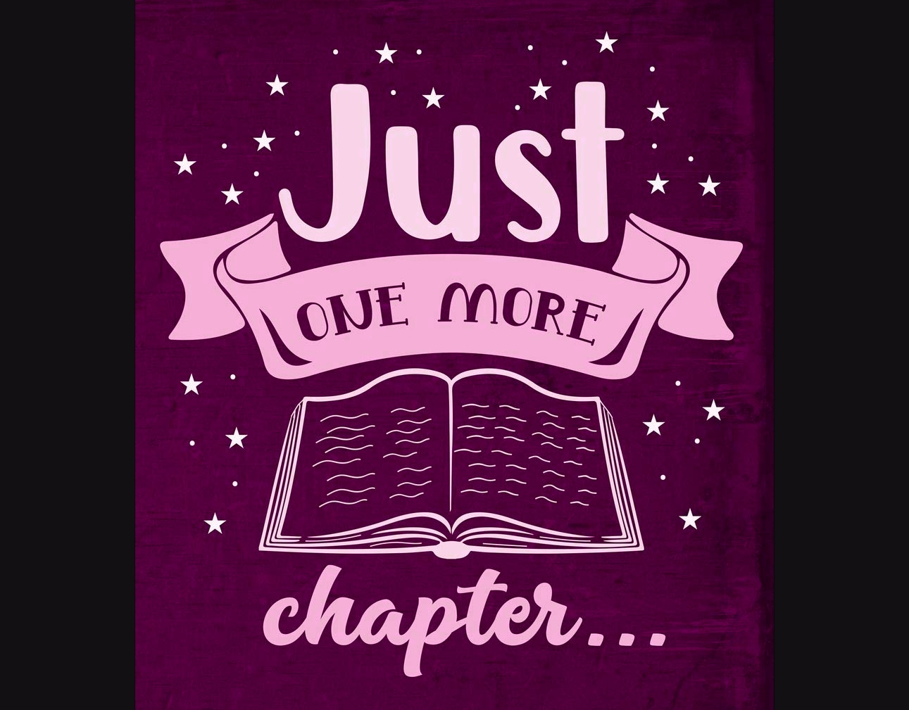

| Ime knjige | Kratki sadržaj | Moj osvrt |
|---|---|---|
Dobra kći - Karin Slaughter |
28 godina bezbrižan život u malome gradu za Samanthu i Charlotte Quinn naprasito je prekinut brutalnim napadom na njihov dom. Majka im je ubijena pred očima, a otac Rusty, poznati i ozloglašeni gradski odvjetnik, uvijek će osjećati krivnju zbog tog napada. Nakon te noći, njihova obitelj ostat će nepovratno slomljena, trpeći mučne posljedice i mnoga nerazjašnjena pitanja... |
Napet i fascinantan roman koje me je odmah uvukao u priču. Karin Slaughther izvanredno razrađuje likove čiji je život iako buran i zauzet zauvijek zasjenjen traumatičnim događajem iz prošlosti. Posebno mi se svidio način na koji je autorica organizirala poglavlja i kako je tek na kraju ispričana potpuna priča o užasu koji je obitelj pretrpjela te kobne noći. Izvrsna analiza ljudske sposobnosti na prilagodbu i unutrašnje otpornosti. |
| Kafić na kraju svijeta - John Strelecky |
Mali café usred ničega postaje prijelomnica za Johna, marketinškog direktora koji živi u vječnoj žurbi. John se zapravo želi samo kratko odmoriti, ali na jelovniku uz dnevni meni pronalazi i tri pitanja: “Zašto ste ovdje? Bojite li se smrti? Jeste li ispunjeni? Pitanja o smislu života u mislima ga odvode iz njegova direktorskog ureda na havajsku obalu, pri čemu mijenja svoj stav prema životu i odnosima. Njegovo se putovanje pretvara u putovanje u samoga sebe. |
Ovo je prva knjiga koju sam pročitala dva puta za redom. Bila opisana situacija stvarna ili ne, opčinjena sam jednostavšću s kojom Strelecky iznosi životne istine. Kritika na knjige osobnog razvoja je što su češto previše nabijene poukama, dok je u ovoj knjizi ostvaren predivan balans hrane za razmišljanje i opuštajućih slika svakodnevnog života. Apsolutno moja broj jedan preporuka iz ovog žanra. |
Jane Eyre - Charlotte Bronte |
Siromašna i fizički ne suviše atraktivna Jane Eyre započinje život kao usamljeno siroče u kući tetke koja ju mrzi. Kad odraste postaje guvernanta u Thornfield Hallu, gdje zavoli svojeg poslodavca, bajronovski mračnog i strastvenog gospodina Rochestera, koji se ludo zaljubi u Jane zbog njezine jednostavnosti, otvorenosti i intelektualne znatiželje. No razotkrivanje strašne, mučne tajne razdvaja strastveno zaljubljene junake... |
Jedan od klasika iz književnosti, roman o odrastanju. Knjiga počinje sporo, ali me vrlo brzo uspjeva povezati s glavnom junakinjom. Nije to samo priča o ljubavi, nego govori i o svojevremenom položaju žena u društvu, odnosima u obitelji i religiji. Obožavam romane koji prate obične žene i ilustriraju probleme s kojim su se susretale žene prije, a tako i danas. Jane ne odustaje od borbe za ravnopravnost i suočava se s okrutnošću svijeta. |
Mizeri - Stephen King |
Šeldon je čuveni pisac, koji je slavu stekao istorijskim romansama sa glavnom junakinjom Mizeri. Kada Pol doživi saobraćajnu nezgodu, ima tu sreću da ga sa mesta nesreće spasi medicinska sestra – Eni. Ispostavlja se da je Eni njegova najveća obožavateljica, i ona ga sa zadovoljstvom odvodi u svoju izoliranu kuću kako bi mu pružila njegu. Međutim, nimalo je neće obradovati vijest da Pol u posljednjem romanu ubija Mizeri. |
Stephen King je majstor stvaranja jezive atmosfere, ali u ovoj knjizi je nadmašio samog sebe. Ne sjećam se kada sam zadnji put bila toliko opčinjena knjigom da sam ovako letjela kroz stranice. Svako novo poglavlje je uzbudljivo, navijala sam za glavnog junaka, osjećala njegovu bol i nadala se da će uspjeti pobjeći. Annie je Kingovo remek djelo jezivosti i nepredvidljivosti. Horor koji se ne zaboravlja. |

Nekoliko riječi o meni:

Zovem se Mateja Jakić.
Porijeklom sam iz Žepča, malog grada u srednjoj Bosni.
Trenutno živim u Osijeku gdje pohađam
preddiplomski studij elektrotehnike.
Oduvijek sam bila knjiški moljac pa je i motiv
za izradu ovog bloga bila upravo želja
da podijelim svoju ljubav prema knjigama s drugima.
Nadam se da ćete na mom blogu pronaći ponešto zanimljivo,
možda saznati za neki vama nepoznat naslov.
Želim vam ugodan boravak!

Društvene mreže: